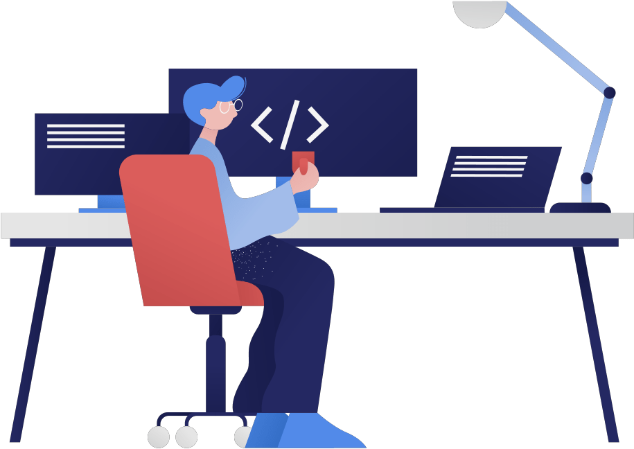
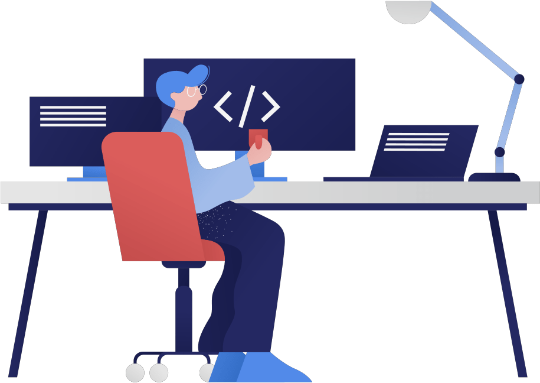

Ontario Ministry of Transportation
IT Project Assistant
1. MyEOIS Website Enhancement
Background and Initial Involvement
During my internship at the Governemnt of Ontario, I contributed to the Employment Ontario Information System (MyEOIS) website, enhancing its functionality to support the administration of various employment programs. My role involved active management of the codebase written in PHP and JavaScript and observing best practices for efficient, maintainable code. I was responsible for identifying bugs and developing new features to improve usability, such as adding an "Add more files" upload feature, and push the changes via Microsfot Azure. After resolving issues, I transferred tickets to other agents for secondary review.


Collaboration and Reporting
In bi-weekly meetings, I documented and presented the bugs I had resolved. These sessions were key in learning to convey technical details and ensuring my work aligned with the team’s objectives.
Challenges and Adaptation
Adjusting to the development workflow and unfamiliar terminologies was initially challenging. However, by seeking guidance from senior colleagues and conducting my own research, I quickly became comfortable with the organization’s technical processes.

2. AI-Based Resume Sorting System
Project Overview and Goals
As part of a team of summer interns, I co-developed an AI-based resume sorting system for the Ontario Ministry of Transportation, aimed at optimizing their recruitment process. I led a 5-person frontend team to develop this platform using React and Vite, creating a user-friendly interface that integrated a Convolutional Neural Network (CNN) model for resume screening and database management. We initially brainstormed approaches and selected the CNN model for its strengths in text processing. Reflecting on this decision, I now believe Transformer models like BERT might have yielded better results.

Stakeholder Presentation
After formulating our strategy, we presented our project proposal to stakeholders. This was an essential step in gathering feedback and understanding recruitment managers' needs, guiding our project’s direction.

Prototyping and Early Challenges
Our team created the prototype using Figma, with the backend team creating a Python-based CNN model using TensorFlow. However, low accuracy due to a limited dataset led us to refine our model parameters and consider alternative solutions.

Development and Technical Stack Choices
Our team implemented a user-friendly interface using React with Vite, facilitating a fast local development server. Selecting a deployment platform was challenging as we had several options (Firebase, GitHub, SQL, MongoDB). Following research and team discussions, we chose Netlify, balancing project budget constraints and necessary dependencies.
Documentation and Project Continuity
I presented bi-weekly progress updates using Power BI to ensure transparency and alignment with our project goals. Upon completion, our team documented our process, technical stack, and recommendations, leaving a foundation for future interns to build upon.
3. IAST Logo Design Contest
Design and Execution
As part of the IAST Logo Design Contest, I aimed to create a visual that embodied the team’s purpose. Using Photoshop, I designed a logo and created an introductory video, ensuring the final product was clear and impactful. My design was selected as the winning entry, underscoring the importance of conveying purpose through visuals.